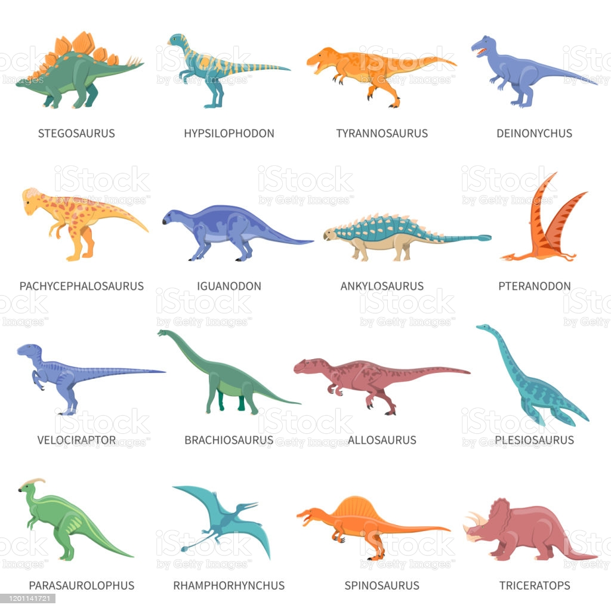
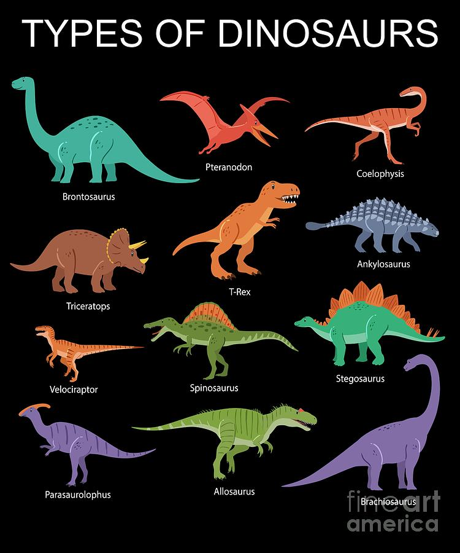

If you want to learn more read this article with all of your attention
The name dinosaur comes from the Greek words deinos (“terrible” or “fearfully great”) and sauros (“reptile” or “lizard”). The English anatomist Richard Owen proposed the formal term Dinosauria in 1842 to include three giant extinct animals (Megalosaurus, Iguanodon, and Hylaeosaurus) represented by large fossilized bones that had been unearthed at several locations in southern England during the early part of the 19th century. Owen recognized that these reptiles were far different from other known reptiles of the present and the past for three reasons: they were large yet obviously terrestrial, unlike the aquatic ichthyosaurs and plesiosaurs that were already known; they had five vertebrae in their hips, whereas most known reptiles have only two; and, rather than holding their limbs sprawled out to the side in the manner of lizards, dinosaurs held their limbs under the body in columnar fashion, like elephants and other large mammals.
Explore the age of the dinosaurs. Discover what the prehistoric world was like and how it changed between when dinosaurs first appeared and the mass extinction at the end of the Cretaceous Period.
Non-bird dinosaurs lived between about 245 and 66 million years ago, in a time known as the Mesozoic Era. This was many millions of years before the first modern humans, Homo sapiens, appeared.
Scientists divide the Mesozoic Era into three periods: the Triassic, Jurassic and Cretaceous. During this era, the land gradually split from one huge continent into smaller ones. The associated changes in the climate and vegetation affected how dinosaurs evolved.
When it comes to the discovery of dinosaurs, Britain holds a special place. While dinosaurs roamed all around the world, it was in Britain where the fossils were discovered and properly studied by the scientists for the first time.
Around some 170 years back, the term “dinosaur” was coined by Richard Owen who was an expert animal anatomist of his time. However, it is believed that some geologists were already familiar with the animal that Owen described as dinosaurs
Nonetheless, his discoveries dawned new light on the prehistoric world of dinosaurs and piqued interest about them all over the world. Since then these colossal reptiles have managed to keep us captivated! Over the years, we have learned a lot about our favorite prehistoric animals.